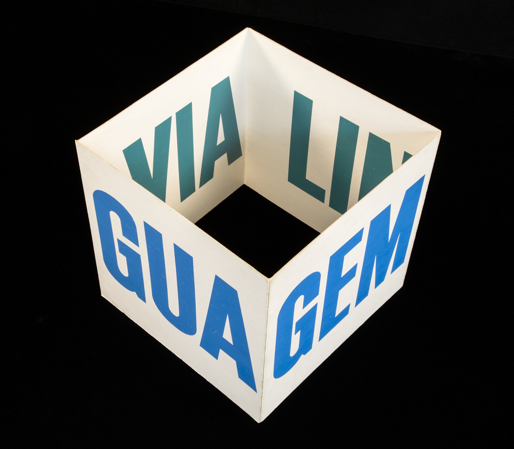
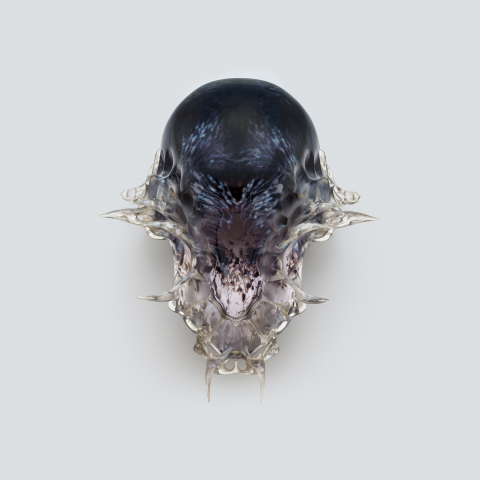
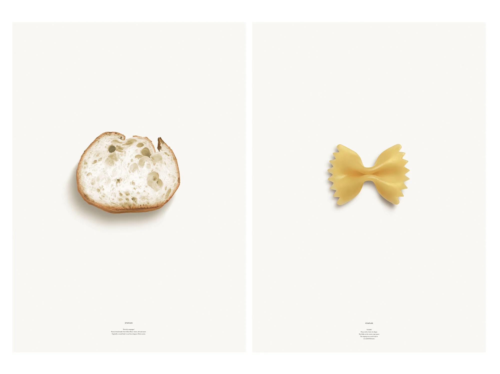

EXHIBITIONS
Current Exhibition
Concrete Poetry: Words and Sounds
in Graphic Space
Sep. 28 – Nov. 30, 2020
Open (Abre), Augusto de Campos (b. 1931) and Julio Plaza (1938–2003), 1969. From Poemobiles (São Paulo, 1974).
Featuring works by foundational figures Augusto de Campos and Ian Hamilton Finlay, Concrete Poetry explores how these artists invented new forms such as cube poems and standing poems and continuously re-created their projects across media. Poetry by contemporaries including Henri Chopin, Ernst Jandl, Mary Ellen Solt, and Emmett Williams also plays a prominent role.
While graphic design’s merging of text and imagery is most often seen in its commercial purposes, for advertising, branding, posters, editorial, and so forth; this exhibition shows how layout and lettering inform literature too, in the form of concrete poetry.
Ho/Horizon/On, Ian Hamilton Finlay, 1968. From The Blue and the Brown Poems (New York, 1968).
Forsythia, Mary Ellen Solt, 1965. From Flowers in Concrete (Bloomington, 1966), n.p.
Star/Steer, Ian Hamilton Finlay, 1965 (original poem).
Linguaviagem, Augusto de Campos, 1967. 2016-B266.
Poems from Caixa Preta (Black Box), Augusto de Campos. From Augusto de Campos (b. 1931) and Julio Plaza (1938–2003), Caixa Preta (São Paulo, 1975).
Beba Coca Cola, Décio Pignatari, 1957. From Poesia concreta in Brasile, 1991.
Upcoming Exhibitions
California: Designing Freedom
Jan. 15 – Feb. 29, 2021
This ambitious survey brings together political posters, personal computers and self-driving cars but also looks beyond hardware to explore how user interface designers in the Bay Area are shaping some of our most common daily experiences. The exhibition reveals how this culture of design and technology has made us all Californians.
Sussman-Prezja, Olympic graphic identity guidelines, 1984
Susan Kare, 'Sketches for a Graphic User Interface Icon', 1982
Posters designed by Facebook's Analog Research Lab
Home Futures
Apr. 20 – Jul. 1, 2021
Explore today’s home through the prism of yesterday’s imagination. Are we living in the way that pioneering architects and designers throughout the 20th century predicted, or has our idea of home proved resistant to real change?
Guido Drocco and Franco Mello, Gufram Cactus, 1972. Courtesy of Gufram.
Explore today’s home through the prism of yesterday’s imagination. Are we living in the way that pioneering architects and designers throughout the 20th century predicted, or has our idea of home proved resistant to real change?
Serious Play: Design in Midcentury America
Jul. 10 – Sep. 2, 2021
Studio 65, Bocca sofa, 1970. Courtesy of Gufram.
Serious Play: Design in Midcentury America explores the projects of over 40 designers who advocated for playfulness and whimsy within their creations for corporations, domestic interiors, and children. The exhibition presents play as a serious form of inspiration, experimentation, and problem solving. In midcentury America, such playful design occurred against the backdrop of a booming consumer market and as a counterbalance to Cold War–era anxiety. Furniture, toys, textiles, films, posters, ceramics are among the objects featured.
Fear and Love: Reactions to a Complex World
Sep. 10 – Oct. 31, 2021
Fear and Love: Reactions to a Complex World presents eleven new installations by some of the most innovative and thought-provoking designers and architects working today.
VESPERS, Mask 3, Series 2, 2016. Designed by Neri Oxman and her team
Staples by Kenra Hara